2. Hatching & engraving
Tone from lines, then orientation, then texture. The burin has one black and one white. Everything else is where the lines go, how thick they are, which way they run.
A. Tone from lines
The burin's vocabulary (see the notes on taille directe):
- width of the taille — press harder, cut deeper, wider line. One line can swell then taper.
- spacing — same width, tighter lines, darker grey.
- interruptions — short or broken tailles lighten without changing tool.
- contre-taille — a second layer crossing the first. Crossing at 30–60° (losange) is softer and vibrates; 90° looks mechanical.
- entre-taille — one fine line slipped between two existing ones. Darkens a bit, does not clog.
- dots — a taille ending in dots melts a shadow into the light. Flesh, distance, transitions.
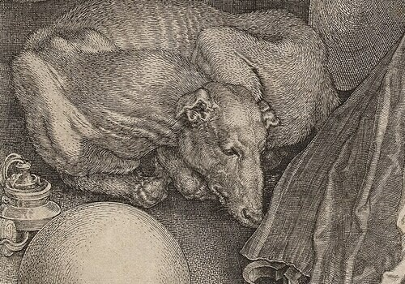
.jpg){kind=link}
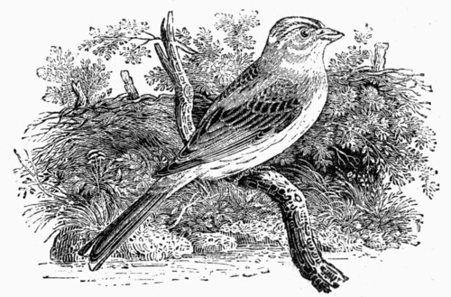

Bewick works the other way round (bois de bout, taille blanche): engrave white into black with a vélo. Same logic, reversed.
Computer equivalents
Line screen, tone by spacing. Lines at a given angle; each darker tone brings them closer. Mechanical. Fine for a plotter: one pen, one width.
Width modulation. Spacing fixed, the line swells where it is darker. This is the burin's look. Ostromoukhov, Digital Facial Engraving, SIGGRAPH 1999: lines follow the form of the face (a parametrization), their thickness comes from comparing a periodic profile with the tone.
Threshold layers. Cut the image in brightness bands; each band gets one more hatch angle. Simple, effective. The hatched plugin for vpype does exactly this, with a plotter-ready output.
Prioritized stroke textures. Winkenbach & Salesin, Computer-Generated Pen-and-Ink Illustration, SIGGRAPH 1994. Strokes are ranked by priority; add them one after the other until the tone is reached. Then the tone is matched, not the pixels. The ancestor of everything below.
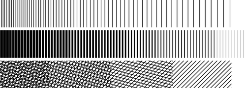

Rule for one pen. One line width (measured on paper: a 0.05–0.1 fineliner draws 0.2–0.3 mm). Tone = spacing only. The white gap must stay at least the line width, else the pen fills it and the hatching becomes a black patch. In numbers: Écart ≥ 8 × Trait (Trait 0.15 mm, Écart ≥ 1.2 mm). Darker than that: cross-hatching, a second family at 30–60°, not a tighter spacing.
Tone check. Render the strokes, blur by what the eye resolves (Gaussian, 0.2–0.5 mm of paper), compare with the target tone. Independent of the screen and the printer. This is what Winkenbach and Salisbury do internally: add strokes until the blurred result matches.
Black line, white line (inversion)
No single name for it. Wood engravers say black-line vs white-line (taille blanche); in perception it is a figure–ground switch; NPR papers say contrast inversion or just black-and-white stylization. The idea: in the lights, draw black lines on white; in the darks, the ground becomes black and you draw white lines on black.
Why it works. Past 50% ink, the white is the minority, so the white is what the eye reads as the marks. A black hatching at 80% ink is really white lines 4× thinner than the black ones. Once you say it that way, the rule for one pen applies again, mirrored: the black gap between two white lines must stay at least the line width. With constant-width lines, tone by spacing only goes from 0 to 50%; inversion gives the other half, 50 to 100%, with the same pen width. No clogging, no cross-hatching needed.
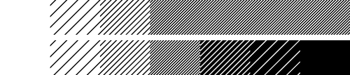
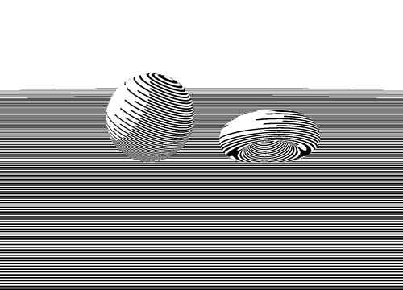
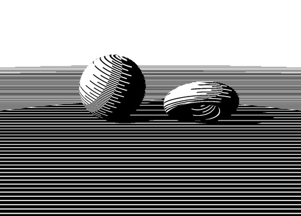
Where the switch happens there is a seam. Engravers hide it: the black line swells until it touches its neighbours, and what is left between them is a white line that keeps thinning. Width-modulated screens (Ostromoukhov, below) do this for free: one periodic profile, ink above the threshold, and black-on-white turns into white-on-black continuously. With constant-width pens (plotter) the seam stays; put it on a form edge or a shadow line, where a change of texture is expected.
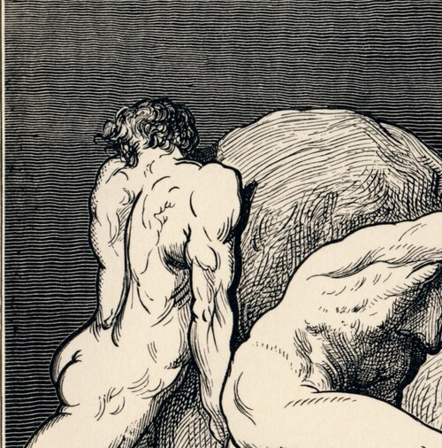
.jpg){kind=link}
Same idea, other media:
- Bois de bout, taille blanche — Bewick (above). The block prints black; every cut is white. Lights are made by cutting a lot.
- Manière noire (mezzotint) — the plate is first roughened all over (berceau), prints solid black; the engraver scrapes and burnishes toward the lights. Drawing in white.
- Scratchboard — black ink on white clay, scratched. The modern hand version.
- Papier teinté, rehauts de blanc — drawing on mid-grey or blue paper: black for the darks, white chalk or gouache for the lights. The paper is the 50%. Three tones instead of two, same logic.
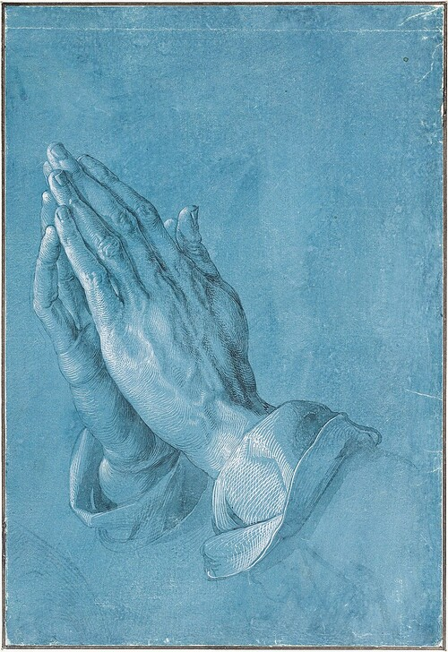

In NPR: Mould & Grant, Stylized black and white images from photographs, NPAR 2008 — segments the image, decides per region if it is drawn black on white or white on black, keeps detail with lines of the opposite colour. Xu & Kaplan, Artistic thresholding, NPAR 2008 — same question as a segmentation/optimization problem: which regions go black, which white, so that the boundaries still tell the shapes.
B. Adding orientation
Strokes that follow the form give tone and shape in one gesture: the curve of a trunk, a hill, a cheek. Fixed angles (above) give tone only. Two questions: which direction, then where to put the lines.
Direction sources
- From a photo: edge tangent flow. Take the image gradient, rotate by 90° (the tangent runs along the edges), smooth it with a filter that keeps the strong edges. Kang, Lee & Chui, Coherent Line Drawing, NPAR 2007. Much of the noise of a naive field is the direction jumping from pixel to pixel; smooth first.
- From 3D: principal curvature directions. Hertzmann & Zorin, Illustrating Smooth Surfaces, SIGGRAPH 2000: hatch along the curvature directions, with a smoothed, regularized field. Earlier, Interrante (1997) used curvature directions to draw strokes on transparent surfaces so that the shape reads through.
- By hand. A few guide curves, interpolate. In the demos below the field is analytic: latitude lines on the sphere, concentric ellipses on the torus, horizontals on the ground.
Placement
Evenly spaced streamlines. Jobard & Lefèr, Creating evenly-spaced streamlines of arbitrary density, 1997 (a flow-visualization paper). Trace a line along the field; seed new lines at distance d on both sides; stop a line when it gets closer than 0.5–0.7 d to another. Let d depend on the tone: darker, closer. Long continuous lines, ideal for a pen. Add a second family (contre-taille) in the darkest parts.
Orientable textures. Salisbury, Wong, Hughes & Salesin, Orientable Textures for Image-Based Pen-and-Ink Illustration, SIGGRAPH 1997. Short strokes, scattered evenly at random (blue noise), each oriented by the field, as many as the tone requires. Tirets rather than lines: tolerant of a noisy field, since a dash promises no continuous line.

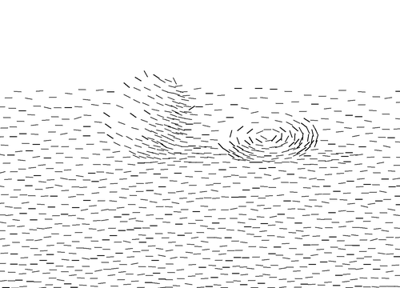
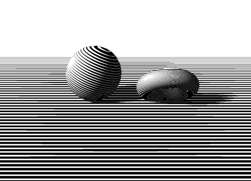
The second image is the burin look: lines swell in the shadow, thin in the light, and bunch up toward the silhouette because they follow the form. A cheap version of Ostromoukhov: no face parametrization needed when the object gives iso-lines for free.
Limit case: one line
Claude Mellan, Sudarium of Saint Veronica (La Sainte Face), 1649: the whole face is one continuous spiral that starts at the tip of the nose. No contre-taille, no dots. Only the width varies: thick in the shadow, hair-thin in the light. Pure width modulation, with the line itself as the orientation field. Wikipedia.
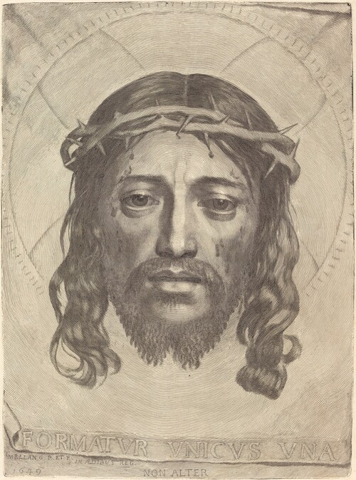

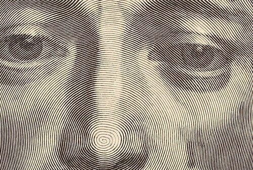
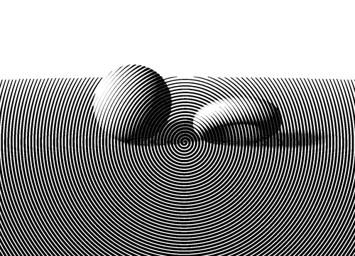
C. Adding texture
Third layer: what the surface is made of. Same tone, same direction, but stroke character changes: straight and regular (metal, glass), wiggly (cloth, hair), short dashes (stone, grass), stipple (flesh, distance), grain (paper, pencil).
- Noise along the stroke. Displace points perpendicular to the line with smooth noise (not white noise), vary the width, break the line into pieces with small gaps, let it overshoot. Cheap and effective. Same idea as rough.js / Handy for the sketchy look.
- Line Integral Convolution. Cabral & Leedom, Imaging Vector Fields Using Line Integral Convolution, SIGGRAPH 1993 (Wikipedia). White noise averaged along the streamlines of the field gives streaky grain; threshold it against the tone. Pencil on rough paper. Grey pixels at heart, so not a plotter method.
- Tonal Art Maps. Praun, Hoppe, Webb & Finkelstein, Real-Time Hatching, SIGGRAPH 2001. Pre-drawn stroke textures for each tone level, nested (a darker level contains the strokes of the lighter one, so nothing flickers), with mip-maps so the stroke density stays constant at any distance. Blended per pixel by the lighting, oriented along a 3D direction field. Real-time; the basis of most game hatching shaders.
- Learned hatching. Kalogerakis, Nowrouzezahrai, Breslav & Hertzmann, Learning Hatching for Pen-and-Ink Illustration of Surfaces, ACM TOG 2012 (doi). Learn the direction, density and length of strokes from a drawing of one model, then apply to another.
- Indication. Winkenbach & Salesin again: full texture where the eye should look (in front, in the light), then only suggested (a few strokes, a patch at the edge of the shadow), then nothing. The engraver stops before the paper ends. Less texture is also less data to plot.
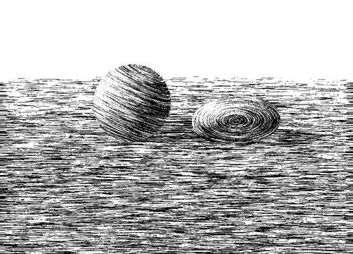
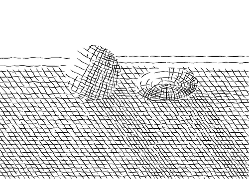
D. Methods table
Two families: tone from where the strokes are placed (a pen can draw it), or from grey pixels (only a printed image). For a plotter only the first counts.
Carries: ●●● = tone, orientation, texture, in this order; a dot is a layer present. Input: image, 3D model, or an image with an estimated direction field.
| Method | Input | T O X | How | Look | Plotter | Demo |
|---|---|---|---|---|---|---|
| Line screen | image | ● | Fixed angle; tone by spacing | mechanical | yes, one width | ramp |
| Width-modulated screen, Ostromoukhov 1999 | image (+ form) | ●● | Periodic profile vs tone; line swells where darker | burin, swell and taper | only with several pen passes | engrave, ramp |
| Threshold layers, vpype hatched | image | ● | One more hatch angle per brightness band | graphic, flat | yes | layers |
| Prioritized stroke textures, Winkenbach & Salesin 1994 | 3D | ●●● | Strokes ranked by priority, added until the tone matches | hand-drawn | yes | — |
| Orientable textures, Salisbury et al. 1997 | image + field | ●●● | Short strokes, blue noise, oriented by field | tirets | yes | dashes |
| Evenly spaced streamlines, Jobard & Lefèr 1997 | image + field, or 3D | ●● | Trace along field, seed at distance d(tone), stop when too close | flowing, follows form | yes, ideal (flow-imager) | flow |
| Edge tangent flow, Kang et al. 2007 | image | ● | Gradient rotated 90°, smoothed, edges kept | — (field only) | prerequisite | — |
| Curvature-aligned hatching, Hertzmann & Zorin 2000; Interrante 1997 | 3D | ●● | Strokes along principal curvature directions, regularized field | engraved, volumetric | yes | — (analytic field in flow) |
| Tonal Art Maps, Praun et al. 2001 | 3D | ●●● | Nested stroke textures per tone, mip-mapped, blended per pixel | hand-drawn, coherent | through the strokes only | — |
| LIC pencil, Cabral & Leedom 1993 | image + field | ●● | Noise averaged along field, thresholded by tone | pencil, grain | no (grey pixels) | LIC |
| Learned hatching, Kalogerakis et al. 2012 | 3D | ●●● | Learn direction, density, length from one drawn model | that artist’s hand | yes (strokes) | — |
| Single-line spiral (Mellan 1649) | image | ● | One spiral, width from tone | burin, swelling line | only with several passes (width) | Mellan, spiral |
| Black/white inversion, Mould & Grant 2008; Xu & Kaplan 2008 | image | ● | Per region: black on white or white on black | Doré, scratchboard | black areas = dense fill, slow; or white pen on black paper | invert |
| Stippling | image | ● | Dots, density from tone | pointillé | yes, slow (many pen lifts) | tone |
| Dithering, halftone | image | ● | Pixel patterns, grey by dot area | no (pixels) | tone |
How to choose
- Plotter, a photo — ETF, then streamlines (vpype flow-imager). Without coding: vpype + hatched, DrawingBotV3.
- Plotter, clean and quick — threshold layers. Fixed angles, but predictable.
- One pen, dark tones — cross-hatching or inversion. Not a tighter spacing: the pen clogs.
- Real-time 3D — Tonal Art Maps. Strokes are texture, the plotter gets nothing.
- 3D model, offline — curvature directions + streamlines. Learned hatching if a reference drawing exists.
- Noisy field or noisy areas — short oriented dashes. Grain look, no plotter: LIC.
- Always start with the tone check; add direction before adding texture.
Demo images computed in Python (numpy, PIL) on a synthetic scene; the direction fields are analytic, not estimated. Historical prints are public domain, resized only.